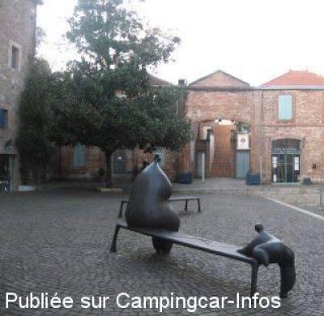
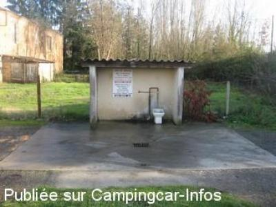
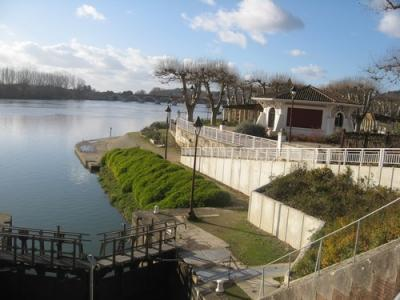
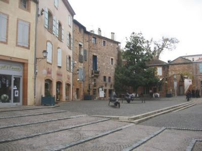

AS = Aire de services uniquement de :
MOISSAC
(N° 624)
Accès/adresse :
Route de Gandalou
Saint Benoit
82200 MOISSAC
Saint Benoit
82200 MOISSAC
Latitude : (Nord) 44.09649° Décimaux ou 44° 5′ 47′′
Longitude : (Est) 1.0885° Décimaux ou 1° 5′ 18′′
Tarif : Gratuit
Type de borne : Artisanale
Services :


Autres informations :
Borne accessible toute l'année
Grille de vidange au sol
2 prises 220 V

Le 06/01/2012 par Breizh 22

Le 05/01/2012 par Breizh 22

Le 28/12/2011 par Breizh 22

Le 28/12/2011 par Breizh 22
de
simon
le 05/01/2012 :
Aire rudimentaire mais trés fonctionnelle que demande t'on de plus et de surcroit les services gratuits ,pour le tunnel je comprends pas je n'ai pas vu le camping et trés facile d'accés et des regroupements de personnages faut arrêter le délire J'ai pas vu ,des posts négatifs nous sont préjudiciables pour ceux qui préparent leurs voyages et notre image de marque car nous ne sommes pas les seuls a les lire ,l'office de tourisme m 'a signalé que aucune interdiction de stationnement existait sur le territoire alors merci aux braves gens de Moissac de nous accueillir ...
Aire rudimentaire mais trés fonctionnelle que demande t'on de plus et de surcroit les services gratuits ,pour le tunnel je comprends pas je n'ai pas vu le camping et trés facile d'accés et des regroupements de personnages faut arrêter le délire J'ai pas vu ,des posts négatifs nous sont préjudiciables pour ceux qui préparent leurs voyages et notre image de marque car nous ne sommes pas les seuls a les lire ,l'office de tourisme m 'a signalé que aucune interdiction de stationnement existait sur le territoire alors merci aux braves gens de Moissac de nous accueillir ...
de
Jean-Philippe Urvoy
le 02/10/2011 :
Rien de remarqué de tel à ce qui est dit ci-dessous sur les regroupements inquiétants.
L'aire de service est en effet à l'entrée du Camping du Bidounet (très bon camping) à deux bons kilomètres de l'abbaye et du cloitre.
Pour ma part j'ai dormi au camping au bord du Tarn(pour les gros camping-cars il y a un emplacement particulier avant le "tunnel" et j'ai stationné pour la journée en ville Allées de Montebello.
Allez à Moissac ne serait-ce que pour cette merveille du cloitre.
Rien de remarqué de tel à ce qui est dit ci-dessous sur les regroupements inquiétants.
L'aire de service est en effet à l'entrée du Camping du Bidounet (très bon camping) à deux bons kilomètres de l'abbaye et du cloitre.
Pour ma part j'ai dormi au camping au bord du Tarn(pour les gros camping-cars il y a un emplacement particulier avant le "tunnel" et j'ai stationné pour la journée en ville Allées de Montebello.
Allez à Moissac ne serait-ce que pour cette merveille du cloitre.
de
Marie
le 21/08/2011 :
Très déçus par la ville, sentiment d'insécurité constant... beaucoup de regroupement de personnages quelque peu inquiétant... Nous n'y retournerons plus.
Très déçus par la ville, sentiment d'insécurité constant... beaucoup de regroupement de personnages quelque peu inquiétant... Nous n'y retournerons plus.
de
Gaubert Jean-Michel
le 26/07/2008 :
L'aire de services se trouve à l'entrée du camping. Il est possible de stationner en ville sur les bords du Tarn. Une borne avec 4 prises électriques est disponible. Les horaires pour se procurer les jetons sont indiqués. C'est un peu bruyant mais l'endroit est plaisant. Si vous désirez aller au camping, il est impératif de ne pas dépasser les 3m de hauteur, l'entrée est un tunnel!!!
L'aire de services se trouve à l'entrée du camping. Il est possible de stationner en ville sur les bords du Tarn. Une borne avec 4 prises électriques est disponible. Les horaires pour se procurer les jetons sont indiqués. C'est un peu bruyant mais l'endroit est plaisant. Si vous désirez aller au camping, il est impératif de ne pas dépasser les 3m de hauteur, l'entrée est un tunnel!!!